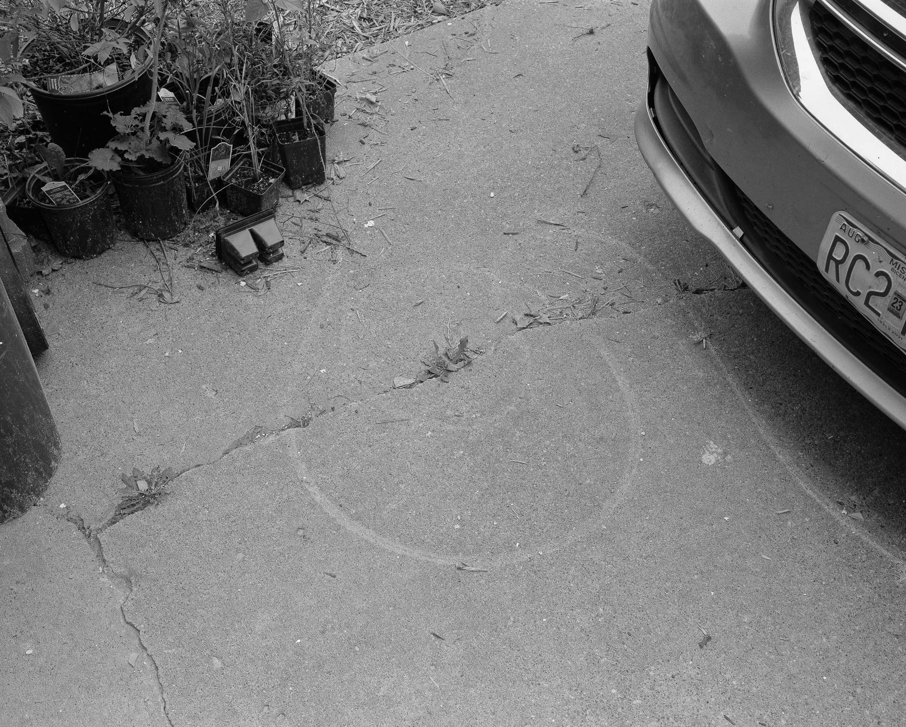
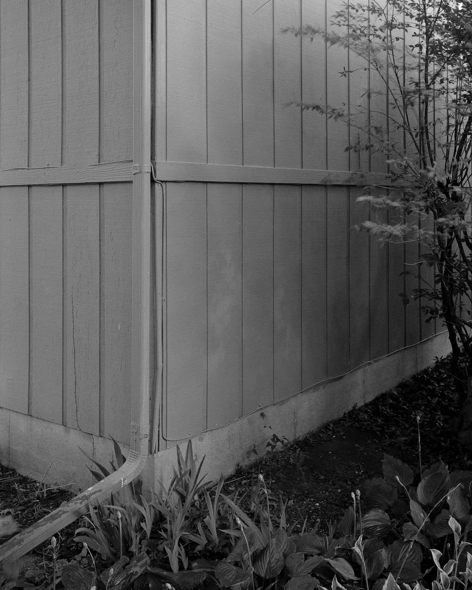
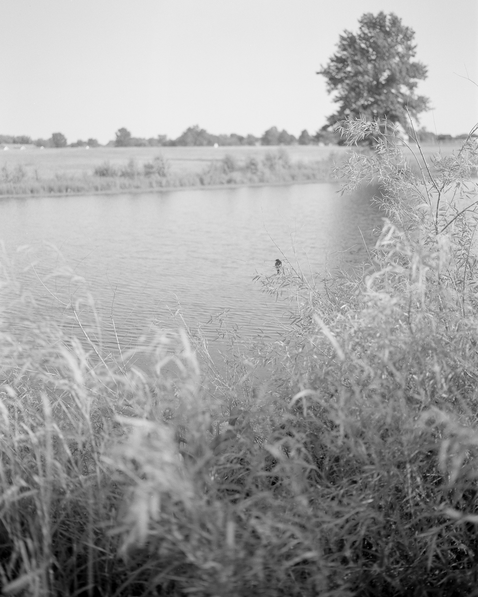
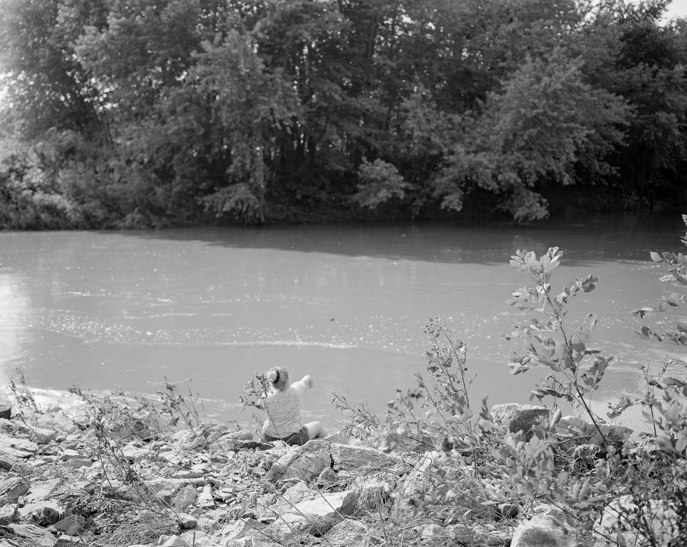
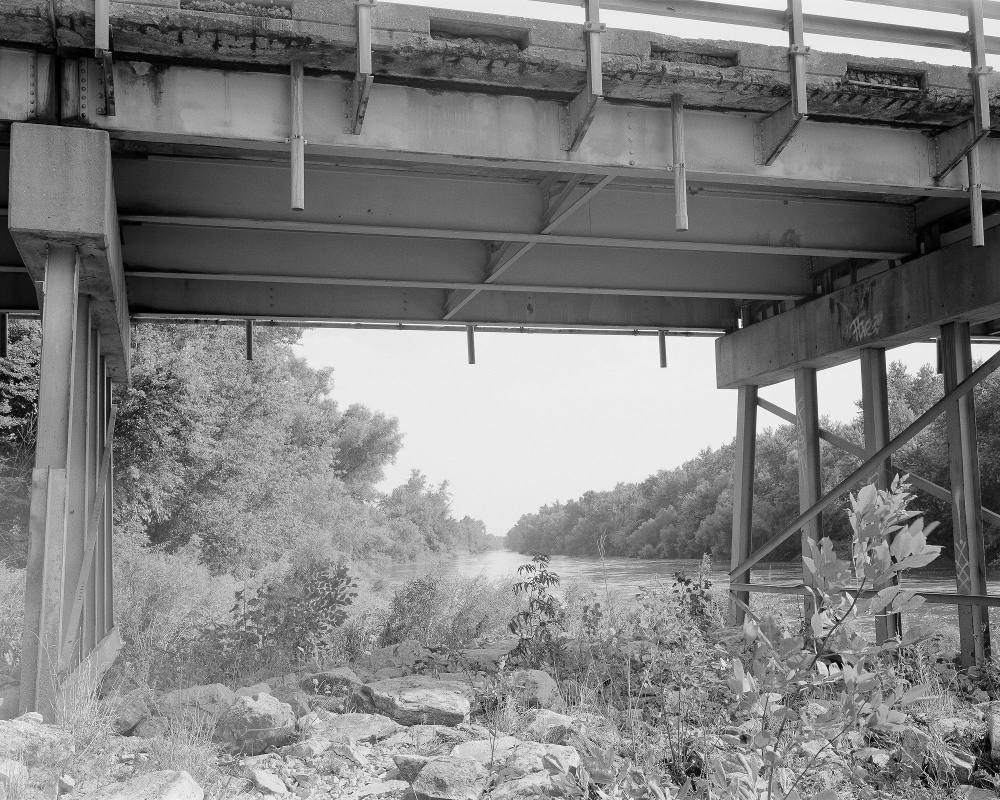
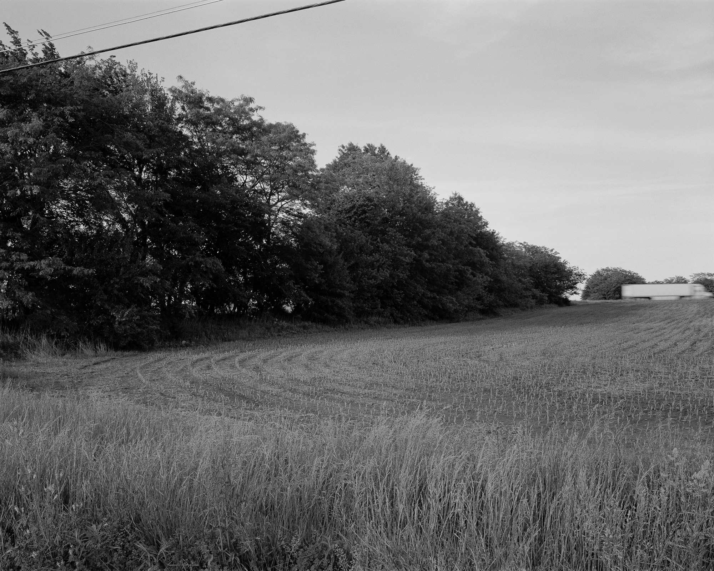

Point Nemo is an ongoing series of photographs, made mostly in rural northeast Missouri
     *
| nemo | (Latin) no one, no name, anonymous |
| nemos | (Greek) grove, wooded pasture, glade |
| N.E.M.O. | abbr. for Northeast Missouri |
| nemophilist | a person fond of forests or trees |
| Point Nemo | the point in all the oceans farthest from land |
*